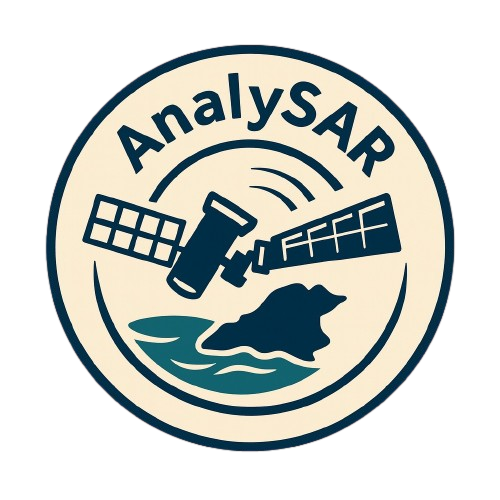

AnalySAR
Flood Analysis with Synthetic Aperture Radar Data
About the Project
AnalySAR is a prototype developed for the NASA International Space Apps Challenge 2025. It utilizes Synthetic Aperture Radar (SAR) data from the Sentinel-1 satellite to detect and quantify water bodies and flood zones in Tabasco, Mexico, over several years.
The Team
- Luis Alberto Miranda Díaz LinkedIn GitHub
- Edson Adan Lopez Carbajal LinkedIn GitHub
- María José Barragán Rosado LinkedIn GitHub
- Mauro Acuña Olivarria LinkedIn GitHub
- Armando Ilianov Lizarraga Duarte LinkedIn GitHub
- Jose Miguel Castro Cazarez LinkedIn GitHub
Repository
References & Sources
- SAR Data: Copernicus Sentinel-1 Mission, processed via Google Earth Engine.
- SAR Search Tool: Alaska Satellite Facility.
- Basemap & DEM: Mapbox Satellite and Terrain-DEM v1.
- Libraries: Mapbox GL JS, Turf.js, Chart.js.